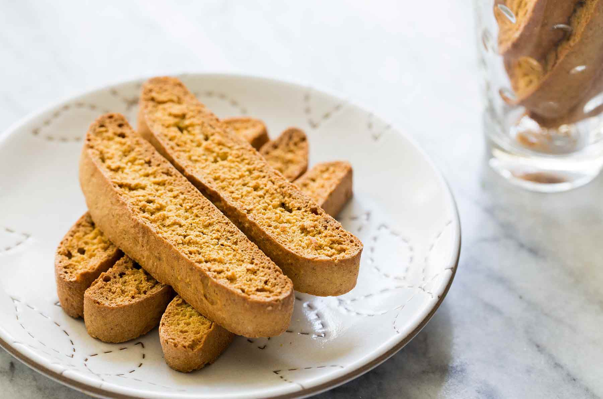

Biscotti

Description
Spicy Shrimp, Celery, and Cashew Stir-fry — the title tells you all you need to know about the recipe. It even lets you visualize the final dish.
Ingredients
- half cup vegetable oil
- 1 cup white sugar
- 3 eggs
- 1 tablespoon anise extract, or 3 drops anise oil
- 3 cups all-purpose flour
- 1 tablespoon baking powder
Steps
- Preheat the oven to 375 degrees F (190 degrees C). Grease cookie sheets or line with parchment paper.
- In a medium bowl, beat together oil, sugar, eggs, and anise flavoring until well blended. Combine flour and baking powder; stir into the egg mixture to form a heavy dough. Divide dough into two pieces. Form each piece into a roll as long as your cookie sheet. Place rolls on the prepared pans, and press down to 1/2-inch thickness.
- Bake in the preheated oven until golden brown, 25 to 30 minutes. Remove cookies from the pans to cool on wire racks. When cookies are cool enough to handle, slice each one crosswise into 1/2-inch-thick slices. Place slices cut-sides up on the pans.
- Bake for an additional 6 to 10 minutes on each side. Slices should be lightly toasted.
Back To Home